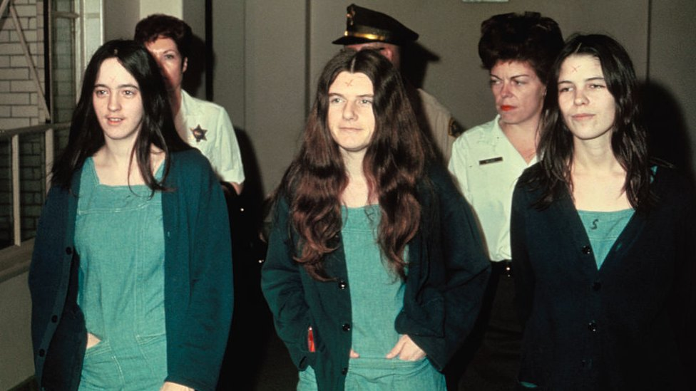

La familia
Charles "Tex" Watson: Considerado la mano derecha de Manson, fue el ejecutor principal y líder táctico de los asesinatos en las casas de Sharon Tate y los LaBianca.

La familia
Susan Atkins (Sadie): Una de las seguidoras más devotas; participó directamente en el asesinato de la actriz Sharon Tate y escribió "PIG" (cerdo) con sangre en la puerta de la casa.